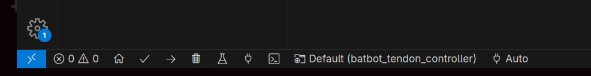
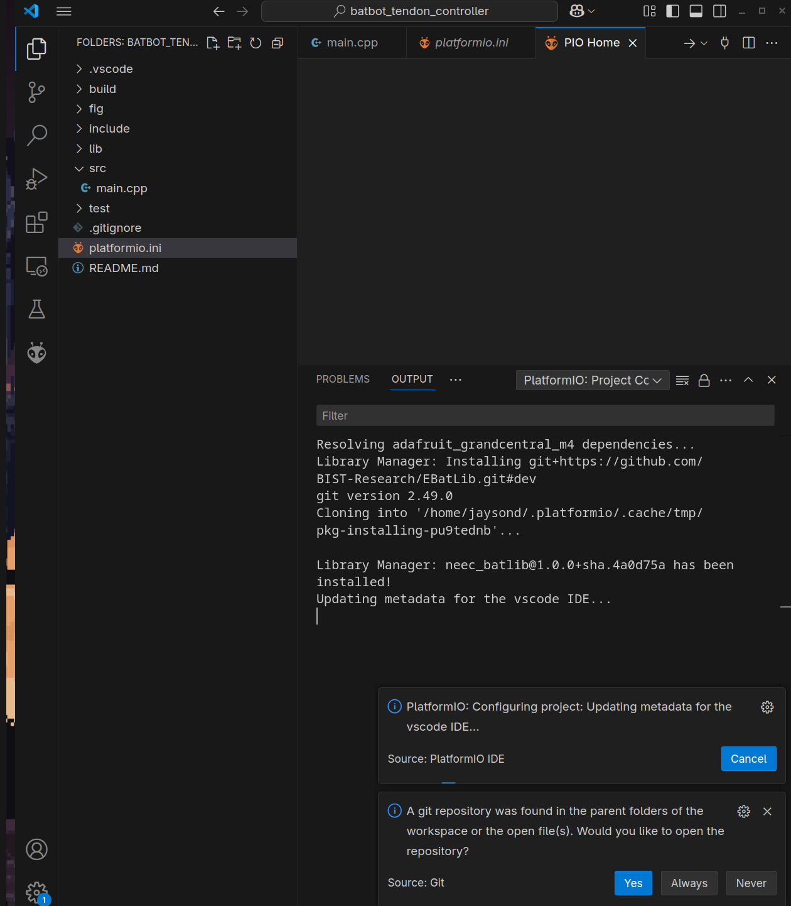

Software Setup
The batbot project software consists of embedded software applications and Python scripts that can be used for interfacing with the hardware from a base station or PC. To utilize the software, a few core dependencies are required:
Python 3.10 or higher
VSCode
PlatformIO Extension on VSCode
To get started, clone the github repository to your local machine and follow the guides below to set up the software applications.
Project Structure
Before diving into the installation instructions, please review the project structure. The batbot project has 4 folders of interest:
batbot
├── batbot_bringup
├── batbot_sonar
├── batbot_tendon_controller
└── doc
The folders contain the following:
batbot_bringup: Contains the Python APIs, scripts, and GUIs for interfacing with the embedded applications from a host computer.
batbot_sonar: Contains the embedded software for the sonar application.
batbot_tendon_controller: Contains the embedded software for controlling the tendon actuation.
doc: Contains the documentation for the batbot project, including this guide.
Installing the Sonar Application
TODO: Add instructions for installing the sonar application.
Installing the Tendon Actuation Application
The tendon actuation application consists of embedded software that runs on an Adafruit Grand Central M4 Express board, as well as a set of Python APIs and scripts that can be used to control the motors via serial connection from a host computer.
Uploading the Embedded Software
To install the embedded software for the tendon actuation application, follow these steps:
- Preparing the project
Open the
batbot_tendon_controllerfolder in VSCode. This folder contains the PlatformIO project for the tendon actuation application. If the PlatformIO extension is installed and loaded correctly, you should see PlatformIO options in the bottom bar of VSCode:
You should also see some set up logs similar to below:

- Building the project
In the bottom bar of VSCode, PlatformIO allows you to switch the active environment. For building and uploading the code to the microcontroller, this should be set to
adafruit_grandcentral_m4. Set it to the active environment by clicking on it in the bottom bar and selecting it from the dropdown.The other environments listed are used for testing purposes and should not be built. After switching to the correct environment, you can build the project by clicking on the checkmark icon in the top bar.
TODO: Add image of PlatformIO build button.
- Uploading the code
After building the project, you can upload the code to the microcontroller by clicking on the right arrow icon in the top bar. Make sure the Adafruit Grand Central M4 Express board is connected to your computer via USB. The upload process will take a few seconds, and you should see a success message in the output console.
TODO: Add image of successful upload.
- Verifying the upload
After installing the Python scripts and APIs, try running one of the scripts (the tendon calibration script is probably best). The microcontroller should light up with flashing yellow LEDs while using the script, which indicates that serial communication is happening. This script can also be used to verify that motor control is working.
For more information on the Tendon Actuation embedded software, refer to Tendon Embedded Software Guide.
Troubleshooting
You will likely run into issues with uploading the code to the microcontroller. Here are a few common fixes:
Ensure the code is uploading to the correct port: Find the upload port for your microcontroller and ensure the logs during the upload process match your upload port. If there is a mismatch in the ports, you may change the upload port in the
platformio.inifile. Leaving this option out will let PlatformIO automatically detect the port, but this may not always work correctly.Ensure that no other applications are using the port: If you have other applications that are using the same port as the microcontroller, this can cause issues with uploading the code. Make sure to close any other applications that may be using the port before uploading the code.
Put the microcontroller in upload mode: We’ve experienced some issues with the microcontroller not entering upload mode automatically during the upload process, so to force the microcontroller into upload mode, double-press the reset button on the board. A bright green LED should light up indicating the board is in upload mode. If the LED is not lit, try pressing the reset button once to reset the board and then double-pressing it again.
Installing the Python APIs and Scripts
The Python APIs are packaged as a Python module that can be installed via pip. This allows you to import the module in your Python scripts and use the APIs to control the motors.
To install the Python module, simply navigate to the batbot_bringup folder in your terminal and run the following commands:
pip install -r requirements.txt
python setup.py build
pip install .
This command will also install any other required python dependencies. To verify the installation, open a Python shell and try importing the module.
For more information on the available Python APIs and scripts, refer to Tendon Scripts & Tools.